Lattacido
Resistenza alla velocità
3x(300m + 200m)

Registra ripetute, parziali, gare e lavoro di forza in un solo diario. StrideBuddy pianifica la tua settimana in base a specialità, allenamenti recenti e stagione, e prevede i tuoi tempi di gara. Record delle ripetute e delle gare restano insieme.
Gratis durante l’anteprima. Serve un account: accedi con Apple o Google.
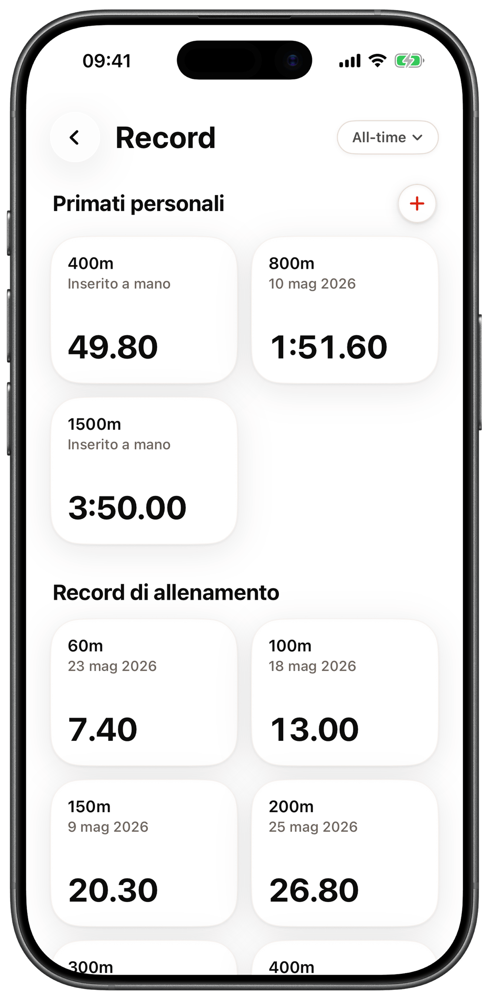
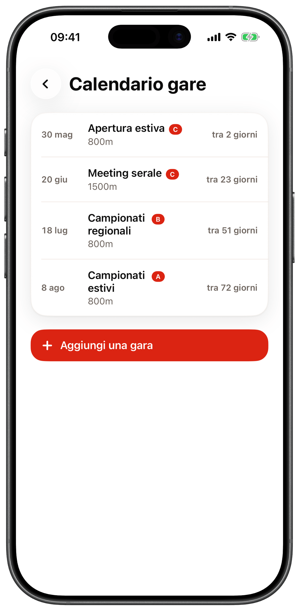
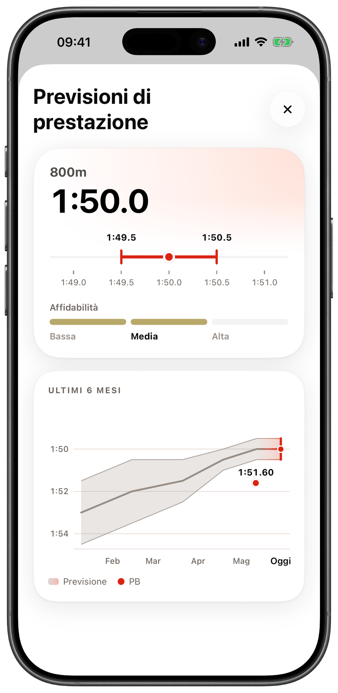
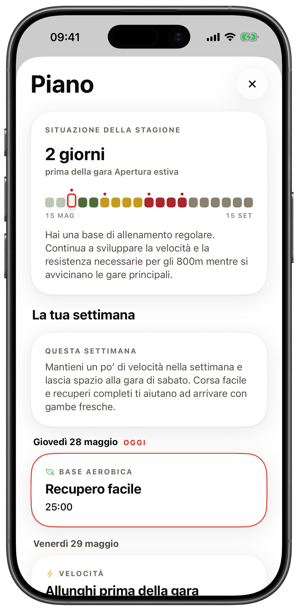
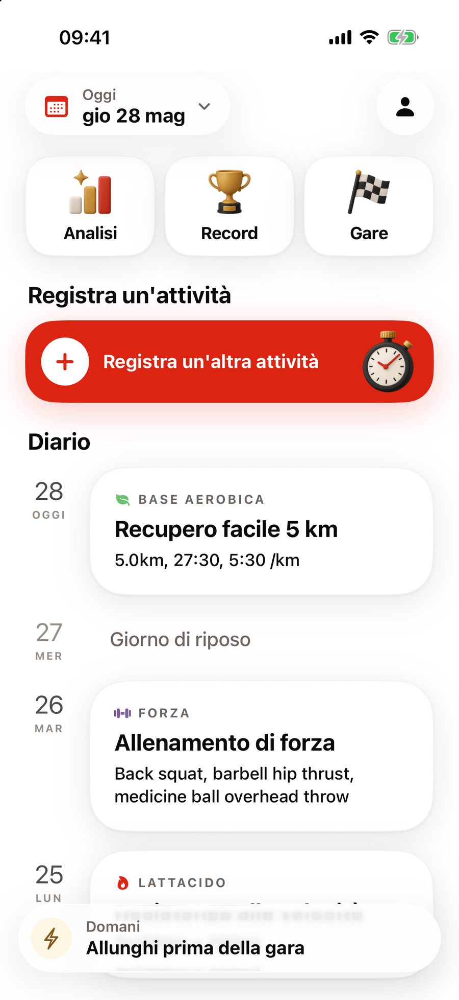
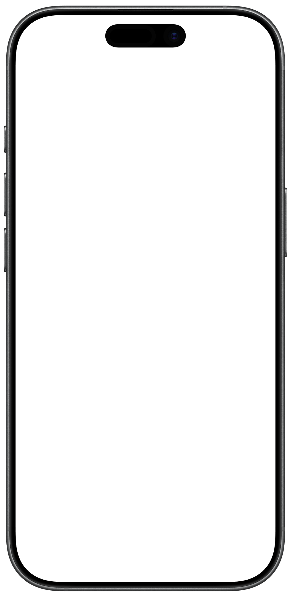
Per chi corre in pista
StrideBuddy riconosce velocità, resistenza alla velocità, lavori aerobici di qualità, corse a ritmo, salite, forza e giorni di gara.
Lattacido
3x(300m + 200m)
Base aerobica
5.0km, 27:30, 5:30 /km
Forza
Back squat, barbell hip thrust, medicine ball overhead throw
Gara
800m, 1:51.60, PB
Funzioni
StrideBuddy sa che una corsa a ritmo e una serie di 300 sono lavori diversi.
Partono tutti dallo stesso pulsante Registra.
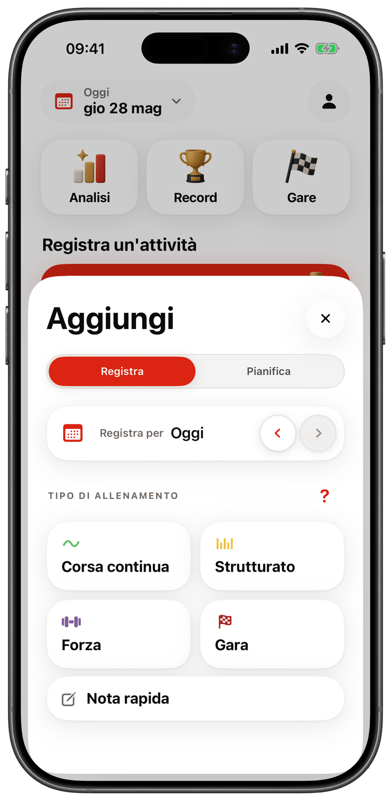
Costruisci la seduta con blocchi, ripetute, parziali e recuperi.
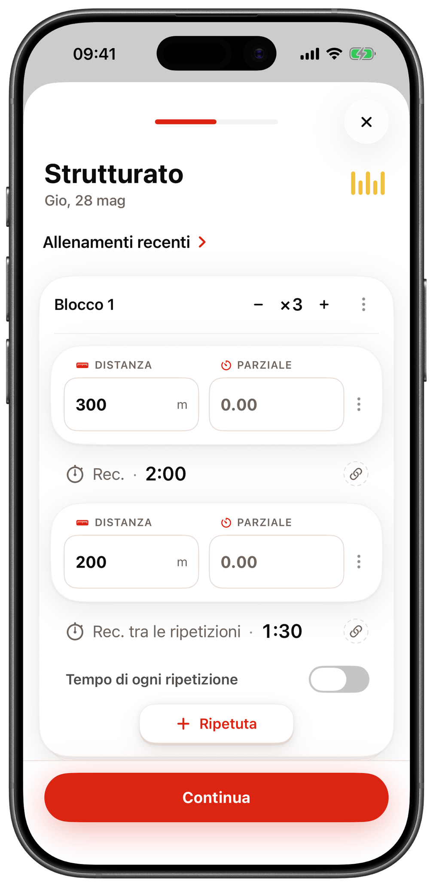
Tocca gli esercizi per aggiungerli, o parti da un modello.
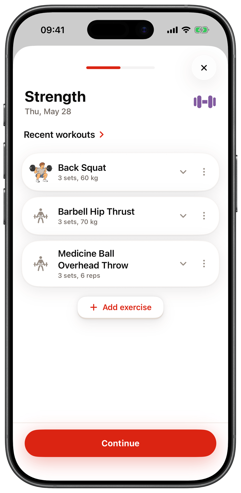
Piano usa la periodizzazione moderna per cambiare l’obiettivo dell’allenamento durante la stagione.
Ripetute e gare una accanto all’altra, senza punteggi.
La registrazione di base è veloce. Apri Segnali facoltativi quando vuoi aggiungere altro.
Pianifica
Il pannello che registra un allenamento serve anche a pianificarlo. Passa a Pianifica, scegli un giorno e il tipo di allenamento che hai in mente.
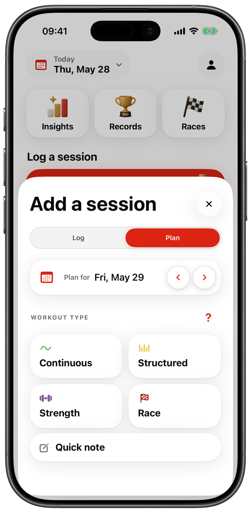
Piano
In Piano, StrideBuddy crea un piano settimanale in base a specialità, allenamenti recenti, giorni disponibili e gare. La stagione dà la direzione. Il diario aiuta a scegliere quanto lavoro proporre.
Piano usa l’IA per scrivere il piano seguendo regole di allenamento specifiche per ogni specialità. È una funzione beta gratuita e serve una connessione a internet per creare o modificare un piano.
Periodizzazione moderna
Periodizzare vuol dire cambiare l’obiettivo dell’allenamento nel tempo. Prima costruisci una base, poi sviluppi le qualità che servono alla tua specialità, infine ti prepari alle gare. Settimane più leggere e recupero fanno parte del piano.
Quando cambia l’obiettivo principale, il piano mantiene le qualità utili. Per scegliere il lavoro della settimana dopo, tiene conto delle sedute recenti e dell’importanza delle gare.
Dopo una pausa, il ritorno all’allenamento è graduale. Una gara vicina può cambiare la preparazione della settimana. Il piano segue la tua situazione.
Situazione della stagione
2 giorni
alla gara Apertura estiva
Ogni seduta ha uno scopo
Apri una seduta pianificata per vedere ripetute, recuperi e indicazioni su come eseguirla. Leggi cosa sviluppa la seduta e come aiuta la tua specialità.
Una seduta può indicare intervalli di tempo o di ritmo, se i tuoi allenamenti recenti e i tuoi primati lo permettono. Può anche non avere un obiettivo numerico.
Quando arriva il giorno, parti dalla seduta pianificata per registrarla. Inserisci il risultato che hai fatto davvero.
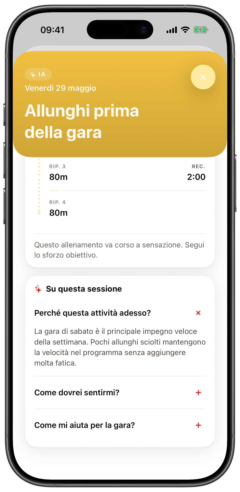
Previsioni di gara
StrideBuddy usa l’IA per leggere il tuo diario e prevedere i tuoi tempi di gara. Ricevi previsioni per la tua specialità principale e per valori collegati. Chi corre gli 800m, per esempio, vede 800m, 400m e 1500m.
Una previsione è una stima, non una promessa. Le previsioni di gara usano l’IA. Sono facoltative e gratuite, con limiti di utilizzo, e serve una connessione a internet. Le ultime previsioni restano disponibili offline.
Volume
Analisi somma la distanza di corsa che hai registrato e mostra le ultime 12 settimane in una linea. Tieni il dito sulla linea per leggere ogni settimana.
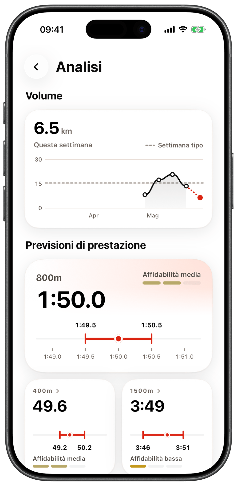
Record
Record riunisce in una pagina i tuoi primati personali e le tue ripetute più veloci. Puoi guardare una sola stagione o tutta la tua storia.
Gare
Aggiungi le prossime gare e indica quanto conta ognuna. Gare mostra tutte le gare in arrivo e quanti giorni mancano. Piano le usa per organizzare il tuo allenamento.
iPhone e web
L’app web usa lo stesso account dell’app per iPhone. Accedi su web.stridebuddy.app per vedere lo stesso diario.
Gli allenamenti si sincronizzano tra l’app per iPhone e l’app web.
Usala su un computer o su un telefono che non è un iPhone.
Non devi installare niente.
Come funziona
Scegli il tipo di allenamento e inserisci i dettagli che vuoi ricordare, come ripetute, parziali, recuperi e sensazioni.
StrideBuddy salva la seduta, le dà un nome e la classifica tenendo conto della tua specialità.
Ritrova la seduta nel diario, controlla record e previsioni di gara e guarda quanto hai corso ogni settimana.
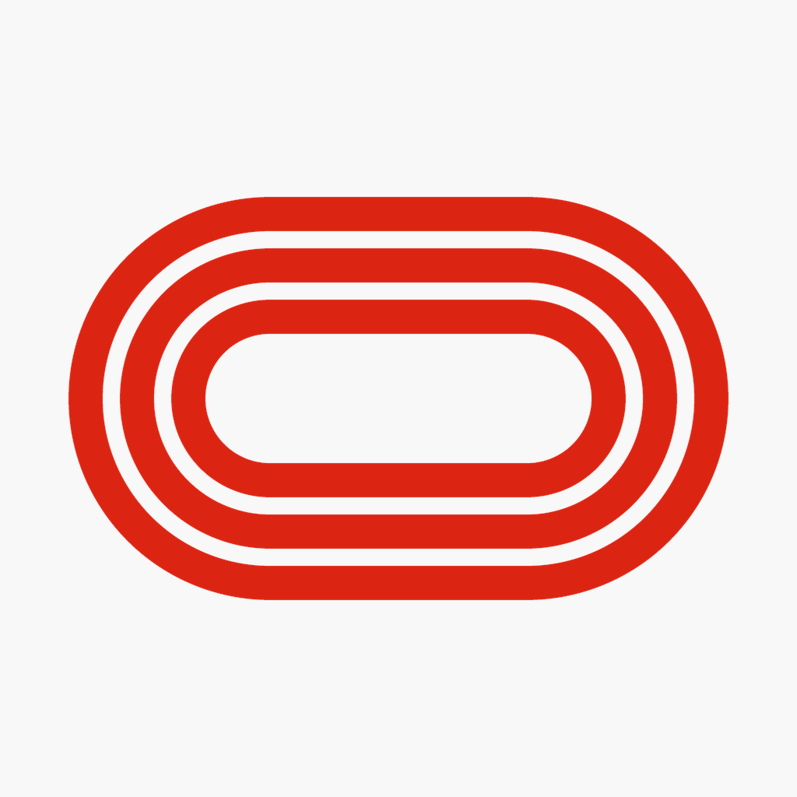
Scarica StrideBuddy per iPhone per registrare allenamenti, lavoro di forza, gare e recupero.